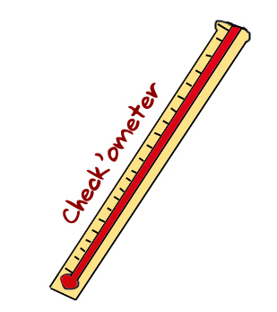

PLAGIARISM CHECKER WEBSITES

Here's some Checking websites...Lets see which scale are you on??
Dupli Checker
Plagiarism Checker
Plagiarisma
Article Checker
SEO Tools
Scan My Essay
Plagiarism Detecter